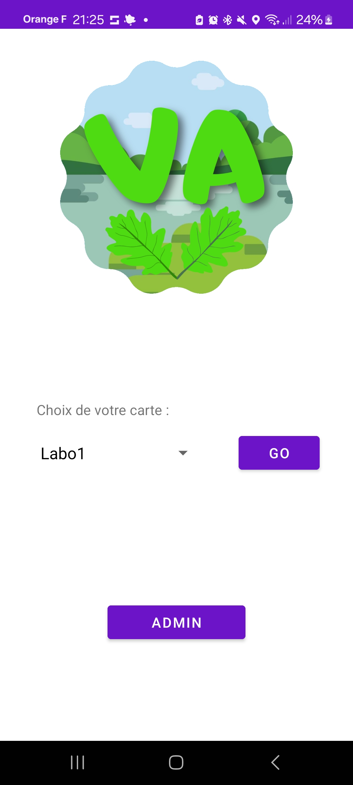
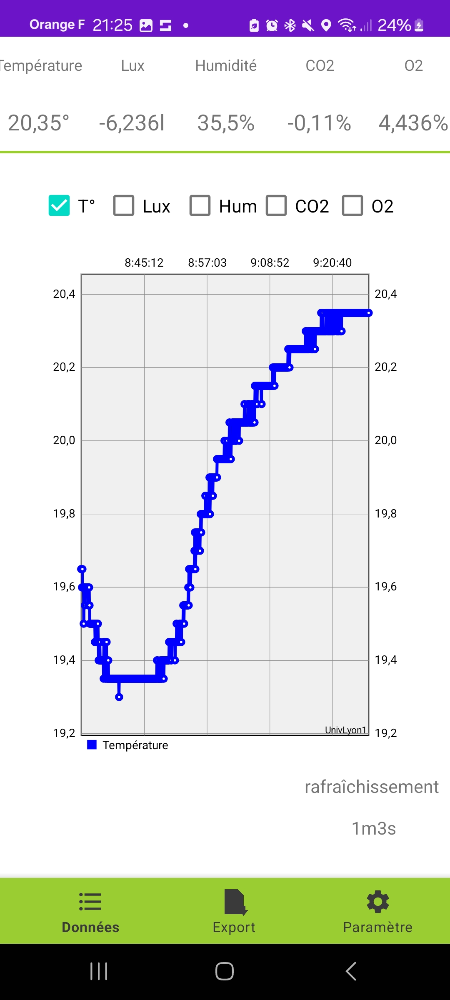
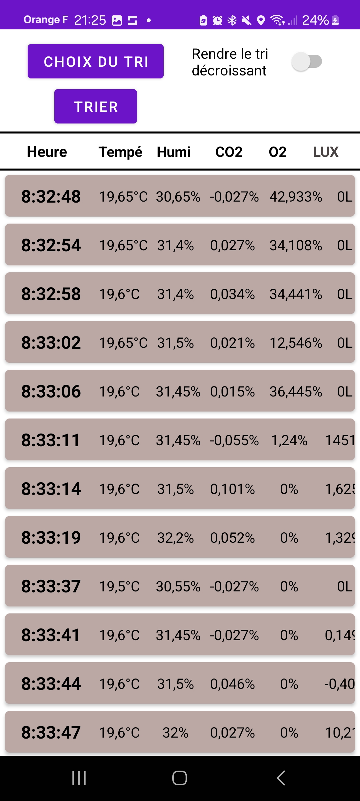

Vegetabillis Auditor
Contexte du Projet
Projet réalisé lors de mon BUT Informatique (2ème année) pour le département biologie de l'IUT de Bourg-en-Bresse. Ce système automatise le suivi de données biologiques critiques.
Description Technique
Acquisition IoT
Mesure en temps réel de capteurs biologiques (O2, CO2, luminosité) via une carte Arduino.
Stockage Cloud
Synchronisation instantanée des données vers une base de données Firebase pour un accès distant.
Application Mobile
Visualisation graphique en direct sur Android pour les enseignants et les étudiants de l'IUT.
Administration
Gestion simplifiée des données collectées directement depuis l'interface mobile.
Captures d'écran


